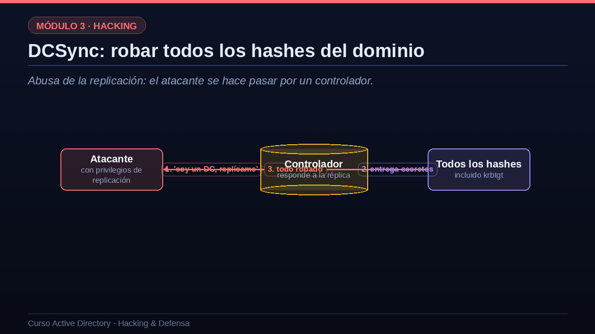
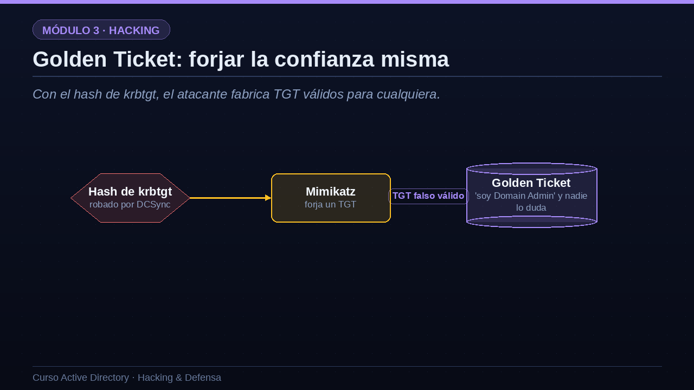

01DCSync: robar todos los hashes del dominio
Abusa de la replicación: el atacante se hace pasar por un controlador.
Empecemos por DCSync, una técnica tan elegante como devastadora. Recuerda que los controladores de dominio se replican entre sí sus datos, incluidos los hashes de las contraseñas. DCSync abusa de ese mecanismo legítimo. El atacante, que ha conseguido ciertos privilegios de replicación, le dice a un controlador real: oye, soy otro controlador, replícame los datos de este usuario. Y el controlador, creyendo que habla con un igual, le entrega los hashes. El atacante puede pedir así el hash de cualquier cuenta, incluida la más valiosa de todas: la cuenta krbtgt, la llave maestra de Kerberos. Lo aterrador de DCSync es que no requiere ejecutar nada en el controlador ni instalar malware: usa una función de replicación perfectamente normal. Basta con tener los permisos de replicación, que poseen los administradores de dominio y, por errores de configuración, a veces también otras cuentas. Herramientas como Mimikatz e Impacket lo implementan en un solo comando.

02DCSync en la práctica
Veamos DCSync con comandos, usando secretsdump de Impacket. Con una cuenta de administrador de dominio, le pedimos específicamente el hash de la cuenta krbtgt usando la opción just guion dc guion user. En un instante, el controlador nos entrega el hash NTLM de krbtgt, que resaltamos porque es, literalmente, la llave del reino, como veremos enseguida con el Golden Ticket. Pero DCSync puede ir mucho más allá: con la opción just guion dc, sin especificar usuario, volcamos de una sola vez los hashes de todo el dominio, las trescientas cuarenta cuentas en este ejemplo. Con eso en la mano, el atacante tiene las credenciales de absolutamente todos los usuarios y equipos, y puede autenticarse como cualquiera de ellos cuando quiera. Es el robo total de identidades. Y, repito, se ha hecho sin instalar nada, abusando solo de la replicación. Por eso detectar DCSync es una prioridad defensiva, como veremos en la última lección.
# Extraer el hash de krbtgt replicando como un DC secretsdump.py empresa.local/admin_dom@10.0.0.10 -just-dc-user krbtgt [*] Dumping Domain Credentials (domain\uid:rid:lmhash:nthash) krbtgt:502:aad3b...:f3bca9e1c7d0... <-- ¡LA LLAVE DEL REINO! # O volcar TODO el dominio de una vez secretsdump.py empresa.local/admin_dom@10.0.0.10 -just-dc 340 cuentas volcadas: todos los hashes del dominio
03Golden Ticket: forjar la confianza misma
Con el hash de krbtgt, el atacante fabrica TGT válidos para cualquiera.
Y ahora, el porqué de tanta insistencia con krbtgt. Recuerda de la lección de Kerberos que todos los TGT, los tickets maestros, van cifrados con el hash de la cuenta krbtgt. El controlador confía en cualquier TGT que pueda descifrar correctamente con esa clave. Pues bien: si el atacante ha robado el hash de krbtgt mediante DCSync, puede fabricar él mismo TGT desde cero, con las herramientas Mimikatz o Impacket. Eso es el Golden Ticket, el ticket dorado. En ese ticket falso, el atacante escribe lo que quiera: por ejemplo, que es administrador de dominio, o incluso que es un usuario que no existe. Como está cifrado con la clave auténtica de krbtgt, todos los controladores lo aceptan como válido sin rechistar. El atacante no está robando una identidad: está forjando la confianza misma del sistema. Un Golden Ticket concede acceso total al dominio, es válido durante años por defecto, y sobrevive aunque cambies las contraseñas de los usuarios.

04La familia de tickets forjados y la persistencia
El Golden Ticket encabeza toda una familia de técnicas de forja y persistencia que debes conocer. El Silver Ticket es su hermano menor: en lugar del hash de krbtgt, usa el hash de un servicio concreto para fabricar tickets de servicio falsos para él; es más limitado, pero también más sigiloso, porque no pasa por el controlador. El Diamond Ticket es una evolución más moderna y furtiva, que modifica un TGT real en lugar de crear uno de la nada, para evadir las detecciones. DCShadow permite al atacante inyectar cambios en el directorio haciéndose pasar por un controlador, por ejemplo para crear puertas traseras silenciosas. Y el abuso de AdminSDHolder, una plantilla especial de permisos, deja una puerta trasera persistente que se reaplica sola cada hora, muy difícil de erradicar. Todas estas técnicas comparten un objetivo: mantener el control del dominio de forma duradera y oculta, incluso después de que el equipo de seguridad crea haber limpiado la intrusión.
| Técnica | Qué hace | Qué necesita |
|---|---|---|
| Golden Ticket | TGT falso: acceso total al dominio | Hash de krbtgt |
| Silver Ticket | TGS falso para un servicio concreto | Hash de ese servicio |
| Diamond Ticket | Modifica un TGT real: más sigiloso | Hash de krbtgt |
| DCShadow | Inyecta cambios como un DC falso | Privilegios muy altos |
| AdminSDHolder | Puerta trasera vía plantilla de ACL | Control del dominio |
“Si el hash de krbtgt es comprometido, la única cura real es rotarlo dos veces y, a menudo, reconstruir la confianza del dominio.”La razón por la que un compromiso de dominio es tan grave
Esta cita resume por qué un compromiso de dominio es tan serio. Si el hash de krbtgt ha sido comprometido, no basta con cambiar unas cuantas contraseñas. La única cura real es rotar la contraseña de krbtgt dos veces seguidas, por cómo funciona la replicación, y aun así, si el atacante tuvo control total, puede haber sembrado tantas puertas traseras, como las que acabamos de ver, que muchas organizaciones optan por reconstruir el dominio desde cero. Por eso la seguridad de Active Directory no va solo de impedir la entrada, sino de detectar y responder rápido, antes de que el atacante llegue a este punto de no retorno. Ese es, precisamente, el tema de las dos últimas lecciones.
05Resumen de la lección
Recapitulemos esta lección decisiva. DCSync abusa del mecanismo legítimo de replicación para robar todos los hashes del dominio, incluido el de krbtgt, sin instalar nada. Con ese hash, el Golden Ticket permite fabricar tickets maestros falsos que conceden control total y duradero sobre el dominio. A su alrededor existe una familia de técnicas, como el Silver Ticket, el Diamond Ticket o DCShadow, cada vez más sigilosas, orientadas a la persistencia. Y la conclusión es contundente: comprometer krbtgt puede llevar al dominio a un punto de no retorno que obligue a reconstruirlo. Con esto cerramos el módulo de ataque. En las dos últimas lecciones nos pasamos definitivamente al lado de la defensa: primero el hardening, y después la detección y la respuesta. Nos vemos en la lección catorce.
- DCSyncAbusa de la replicación para robar todos los hashes, incluido krbtgt.
- Golden TicketCon el hash de krbtgt, se fabrican TGT falsos: control total y duradero.
- Silver, Diamond, DCShadow...Variantes de forja y persistencia cada vez más sigilosas.
- Punto de no retornoComprometer krbtgt puede obligar a reconstruir el dominio.